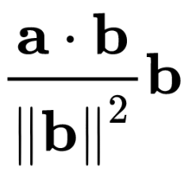
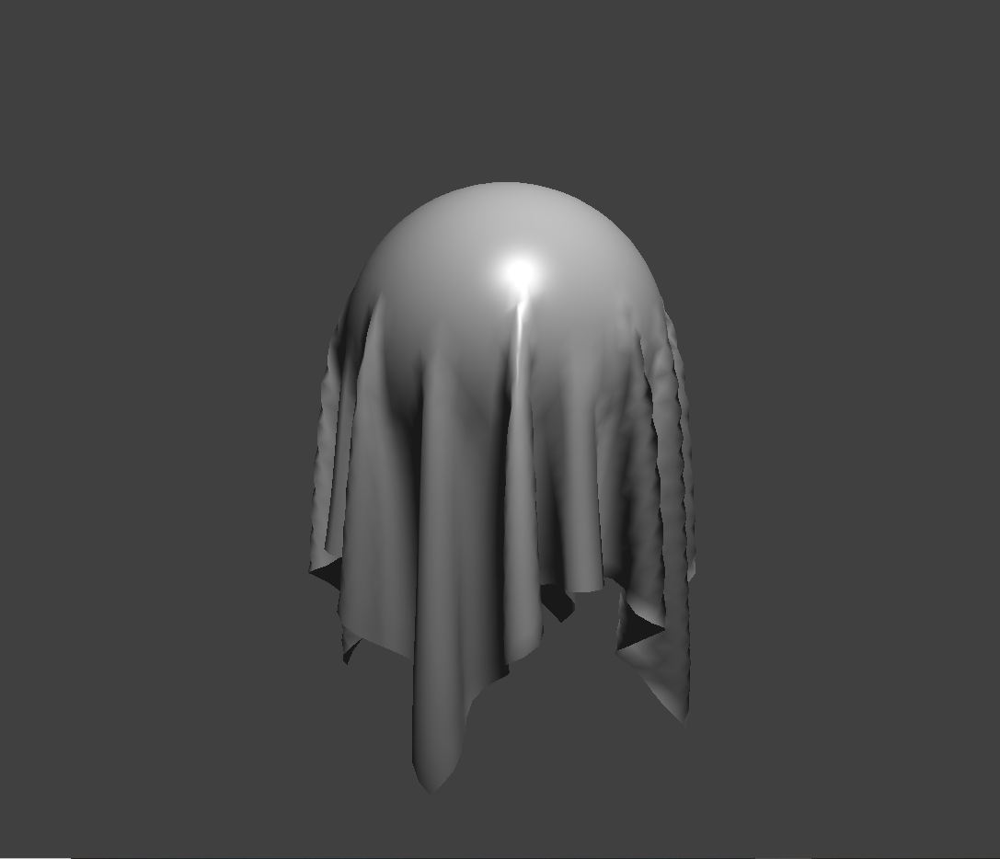
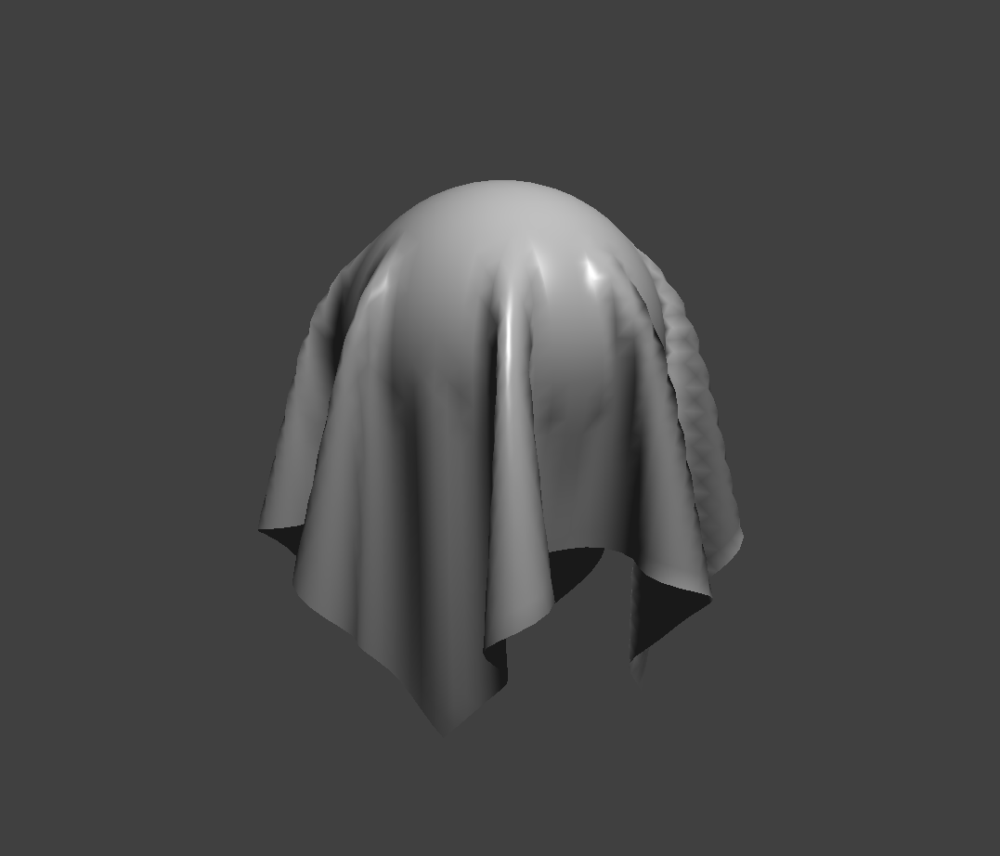
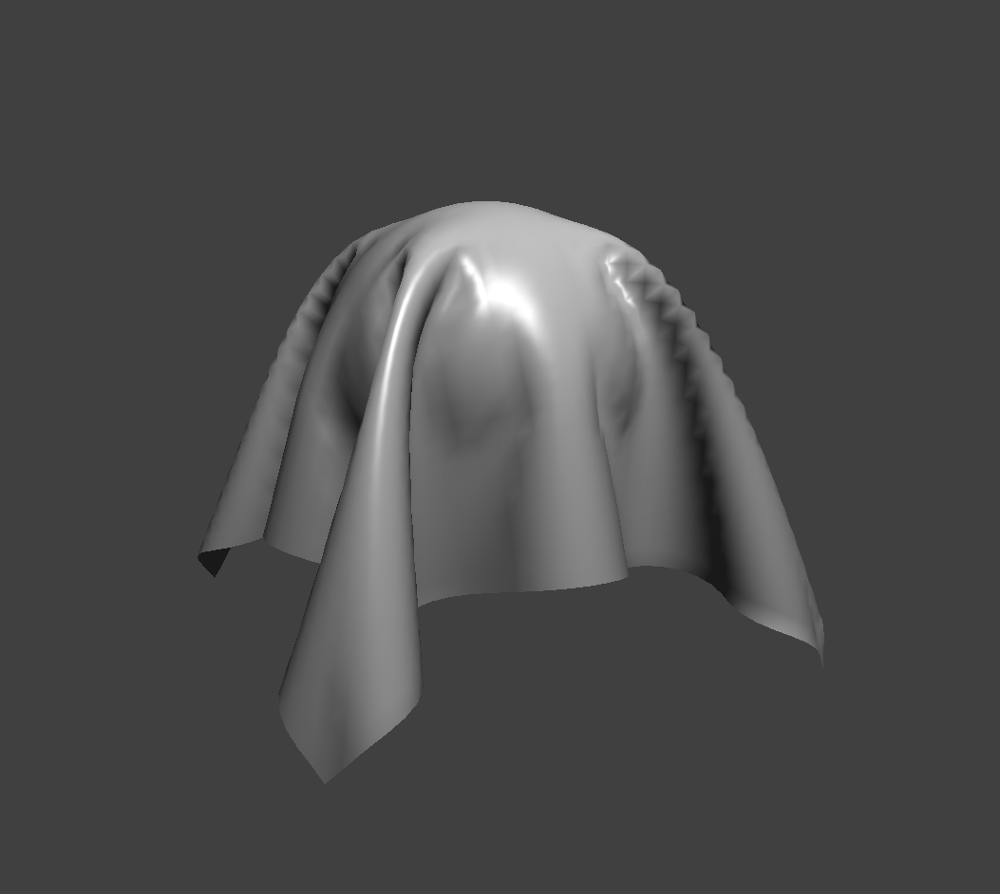
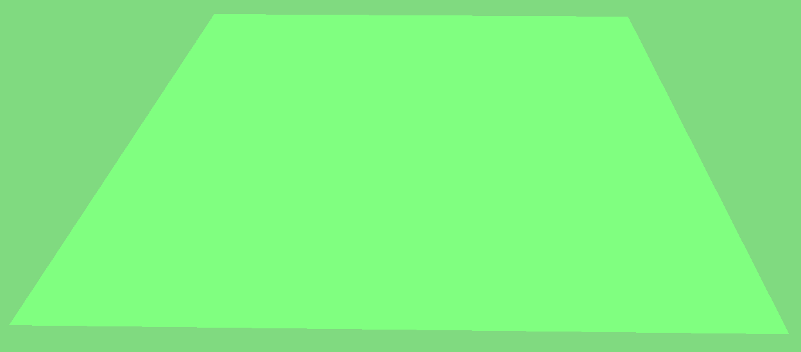

Collisions with Other Objects
Make that cloth dance in the spring! (haha very pun, much fun)
Behind the scenes
We implemented collisions with spheres and planes. In general, to check for collisions we simply looped over all collision objects and checked if any of our point masses collided with it.
This was a naive approach, and perhaps we could have made it better, using spatial hashing, for example.
For sphere collisions, we used the fact that if a point's distance to the sphere's center was less than its radius, it collided with the sphere (we further optimized this since we could use the radius and distance squared, which avoided two square root operations per check).
We then bumped the mass's position to be slightly above the sphere's surface, conserving the direction to the sphere's center.
For plane collisions, let P be a point on the plane. We checked if the dot product of the vector from P to the mass's position with the plane's normal was not the same sign as the dot product of the vector between the mass's previous position and P with the plane's normal, and if so, the mass had gone through the plane, since the normal was roughly the same direction for one but the opposite direction for the other.
We then used the projection a onto b:
where a was the vector from P to the mass's last position, and b was the normal (this worked since both vectors are relative to the point on the plane).
This gave us the vector that, when subtracted from the mass's position, was the collision point. We then bumped this projection to be slightly before the collision point, scaled by friction, then used that to move the mass to just right before the mass actually touched the surface.
Pretty pictures
Various ks values (N/m):
| Image | Comparison |
|---|---|
|  | 500: Compared to the default cloth of 5000 N/m, the cloth closely hugs the sphere so that the top half of the cloth looks like just like the sphere itself. It also has a lot more folds and wrinkles and resembles a wet paper towel. |
|  | 5,000: Default setting. Cloth looks stiffer than the 500 N/m cloth. |
|  | 50,000: Cloth is very stiff and has less folds and wrinkles than the 5000 N/m cloth. The folds of the cloth also "reach out" more, pointed away from the sphere, since the stiffness prevents it from bending as much. |
Cloth with Campanile texture lying on top of plane:
Cloth with normals shading lying on top of plane:
